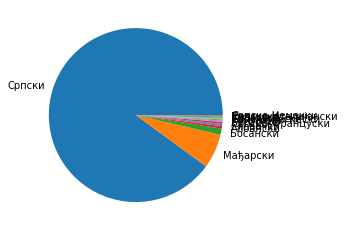
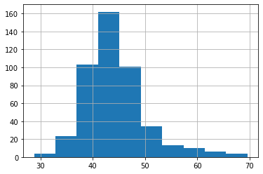

<!DOCTYPE html>
<html xmlns="http://www.w3.org/1999/xhtml" lang=""></html>
  <head>
    <meta charset="utf-8" />
    <meta name="viewport" content="width=device-width, initial-scale=1.0" />
<title>Пример скупа података за пројектно учење &#8212; Petlja - 8</title>
    <link rel="stylesheet" href="_static/pygments.css" type="text/css" />
    <link rel="stylesheet" href="_static/basic.css" type="text/css" />
    <link rel="stylesheet" type="text/css" href="_static/activecode.css" />
    <link rel="stylesheet" type="text/css" href="_static/codemirror.css" />
    <link rel="stylesheet" type="text/css" href="_static/qchoice.css" />
    <link rel="stylesheet" type="text/css" href="_static/clickable.css" />
    <link rel="stylesheet" type="text/css" href="_static/pytutor.css" />
    <link rel="stylesheet" type="text/css" href="_static/modal-basic.css" />
    <link rel="stylesheet" type="text/css" href="_static/datafile.css" />
    <link rel="stylesheet" type="text/css" href="_static/dragndrop.css" />
    <link rel="stylesheet" type="text/css" href="_static/fitb.css" />
    <link rel="stylesheet" type="text/css" href="_static/matrixeq.css" />
    <link rel="stylesheet" type="text/css" href="_static/parsons.css" />
    <link rel="stylesheet" type="text/css" href="_static/lib/prettify.css" />
    <link rel="stylesheet" type="text/css" href="_static/poll.css" />
    <link rel="stylesheet" type="text/css" href="_static/showEval.css" />
    <link rel="stylesheet" type="text/css" href="_static/tabbedstuff.css" />
    <link rel="stylesheet" type="text/css" href="https://stackpath.bootstrapcdn.com/bootstrap/4.2.1/css/bootstrap.min.css" />
    <link rel="stylesheet" type="text/css" href="_static/video.css" />
    <link rel="stylesheet" type="text/css" href="_static/webgldemo.css" />
    <link rel="stylesheet" type="text/css" href="_static/webglinteractive.css" />
    <link rel="stylesheet" type="text/css" href="_static/karel.css" />
    <link rel="stylesheet" type="text/css" href="_static/notes.css" />
    <link rel="stylesheet" type="text/css" href="_static/gallery.css" />
    <link rel="stylesheet" type="text/css" href="_static/associations.css" />
    <link rel="stylesheet" type="text/css" href="_static/editor.css" />
    <link rel="stylesheet" href="_static/user-highlights.css" type="text/css" />
    <link rel="stylesheet" href="https://use.fontawesome.com/releases/v5.1.1/css/all.css" type="text/css" />
    <link rel="stylesheet" href="_static/bootstrap-4.0.0-dist/css/bootstrap.min.css" type="text/css" />
    <link rel="stylesheet" href="_static/flatly.min.css" type="text/css" />
    <link rel="stylesheet" href="_static/petlja-runestone.css" type="text/css" />
    <script id="documentation_options" data-url_root="./" src="_static/documentation_options.js"></script>
    <script type="text/javascript" src="_static/runestonebase.js"></script>
    <script type="text/javascript" src="_static/skulpt.min.js"></script>
    <script type="text/javascript" src="_static/skulpt-stdlib.js"></script>
    <script type="text/javascript" src="_static/jquery.js"></script>
    <script type="text/javascript" src="_static/underscore.js"></script>
    <script type="text/javascript" src="_static/doctools.js"></script>
    <script type="text/javascript" src="_static/language_data.js"></script>
    <script type="text/javascript" src="_static/jquery.highlight.js"></script>
    <script type="text/javascript" src="_static/bookfuncs.js"></script>
    <script type="text/javascript" src="_static/codemirror.js"></script>
    <script type="text/javascript" src="_static/xml.js"></script>
    <script type="text/javascript" src="_static/css.js"></script>
    <script type="text/javascript" src="_static/python.js"></script>
    <script type="text/javascript" src="_static/htmlmixed.js"></script>
    <script type="text/javascript" src="_static/javascript.js"></script>
    <script type="text/javascript" src="_static/jquery_i18n/CLDRPluralRuleParser.js"></script>
    <script type="text/javascript" src="_static/jquery_i18n/jquery.i18n.js"></script>
    <script type="text/javascript" src="_static/jquery_i18n/jquery.i18n.messagestore.js"></script>
    <script type="text/javascript" src="_static/jquery_i18n/jquery.i18n.fallbacks.js"></script>
    <script type="text/javascript" src="_static/jquery_i18n/jquery.i18n.language.js"></script>
    <script type="text/javascript" src="_static/jquery_i18n/jquery.i18n.parser.js"></script>
    <script type="text/javascript" src="_static/jquery_i18n/jquery.i18n.emitter.js"></script>
    <script type="text/javascript" src="_static/jquery_i18n/jquery.i18n.emitter.bidi.js"></script>
    <script type="text/javascript" src="_static/activecode-i18n.en.js"></script>
    <script type="text/javascript" src="_static/activecode.js"></script>
    <script type="text/javascript" src="_static/clike.js"></script>
    <script type="text/javascript" src="_static/timed_activecode.js"></script>
    <script type="text/javascript" src="_static/animationbase.js"></script>
    <script type="text/javascript" src="_static/mchoice.js"></script>
    <script type="text/javascript" src="_static/timedmc.js"></script>
    <script type="text/javascript" src="_static/timed.js"></script>
    <script type="text/javascript" src="_static/mchoice-i18n.en.js"></script>
    <script type="text/javascript" src="_static/clickable.js"></script>
    <script type="text/javascript" src="_static/timedclickable.js"></script>
    <script type="text/javascript" src="_static/d3.v2.min.js"></script>
    <script type="text/javascript" src="_static/jquery.ba-bbq.min.js"></script>
    <script type="text/javascript" src="_static/jquery.jsPlumb-1.3.10-all-min.js"></script>
    <script type="text/javascript" src="_static/pytutor.js"></script>
    <script type="text/javascript" src="_static/codelens.js"></script>
    <script type="text/javascript" src="_static/skulpt.min.js"></script>
    <script type="text/javascript" src="_static/skulpt-stdlib.js"></script>
    <script type="text/javascript" src="_static/datafile.js"></script>
    <script type="text/javascript" src="_static/dragndrop.js"></script>
    <script type="text/javascript" src="_static/timeddnd.js"></script>
    <script type="text/javascript" src="_static/dragndrop-i18n.en.js"></script>
    <script type="text/javascript" src="_static/fitb.js"></script>
    <script type="text/javascript" src="_static/timedfitb.js"></script>
    <script type="text/javascript" src="_static/fitb-i18n.en.js"></script>
    <script type="text/javascript" src="_static/matrixeq.js"></script>
    <script type="text/javascript" src="_static/lib/prettify.js"></script>
    <script type="text/javascript" src="_static/lib/hammer.min.js"></script>
    <script type="text/javascript" src="_static/parsons.js"></script>
    <script type="text/javascript" src="_static/parsons-i18n.en.js"></script>
    <script type="text/javascript" src="_static/timedparsons.js"></script>
    <script type="text/javascript" src="_static/poll.js"></script>
    <script type="text/javascript" src="_static/reveal.js"></script>
    <script type="text/javascript" src="_static/shortanswer.js"></script>
    <script type="text/javascript" src="_static/timed_shortanswer.js"></script>
    <script type="text/javascript" src="_static/showEval.js"></script>
    <script type="text/javascript" src="_static/tabbedstuff.js"></script>
    <script type="text/javascript" src="_static/runestonevideo.js"></script>
    <script type="text/javascript" src="_static/webglinteractive.js"></script>
    <script type="text/javascript" src="_static/FileSaver.min.js"></script>
    <script type="text/javascript" src="_static/Blob.js"></script>
    <script type="text/javascript" src="_static/karelCorner.js"></script>
    <script type="text/javascript" src="_static/karelRobot.js"></script>
    <script type="text/javascript" src="_static/karelWorld.js"></script>
    <script type="text/javascript" src="_static/karelChat.js"></script>
    <script type="text/javascript" src="_static/karelRobotDrawer.js"></script>
    <script type="text/javascript" src="_static/karelUI.js"></script>
    <script type="text/javascript" src="_static/karel.js"></script>
    <script type="text/javascript" src="_static/karel-i18n.en.js"></script>
    <script type="text/javascript" src="_static/notes.js"></script>
    <script type="text/javascript" src="_static/pygamelib-init.js"></script>
    <script type="text/javascript" src="_static/gallery.js"></script>
    <script type="text/javascript" src="_static/associations.js"></script>
    <script type="text/javascript" src="_static/associations-i18n.en.js"></script>
    <script type="text/javascript" src="_static/editor.js"></script>
    <script type="text/javascript" src="_static/jszip.js"></script>
    <script type="text/javascript" src="_static/editor-i18n.en.js"></script>
    <script async="async" type="text/javascript" src="https://cdnjs.cloudflare.com/ajax/libs/mathjax/2.7.5/latest.js?config=TeX-AMS-MML_HTMLorMML"></script>
    <script type="text/javascript" src="_static/jquery-ui-1.10.3.custom.min.js"></script>
    <script type="text/javascript" src="_static/jquery-fix.js"></script>
    <script type="text/javascript" src="_static/bootstrap-4.0.0-dist/js/bootstrap.min.js"></script>
    <script type="text/javascript" src="_static/bootstrap-4.0.0-dist/js/bootstrap.bundle.min.js"></script>
    <script type="text/javascript" src="_static/bootstrap-sphinx.js"></script>
    <script type="text/javascript" src="_static/waypoints.min.js"></script>
    <script type="text/javascript" src="_static/rangy-core.js"></script>
    <script type="text/javascript" src="_static/rangy-textrange.js"></script>
    <script type="text/javascript" src="_static/rangy-cssclassapplier.js"></script>
    <script type="text/javascript" src="_static/user-highlights.js"></script>
    <script type="text/javascript" src="_static/jquery.idle-timer.js"></script>
    <script type="text/javascript" src="_static/processing-1.4.1.min.js"></script>
    <script type="text/javascript" src="_static/jquery.hotkey.js"></script>
    <script type="text/javascript" src="_static/jquery-migrate-1.2.1.min.js"></script>
    <script type="text/javascript" src="_static/petlja_ruenstone.js"></script>
    <link rel="index" title="Index" href="genindex.html" />
    <link rel="search" title="Search" href="search.html" />
    <link rel="next" title="Дигитална технологија у мојој школи и пандемија проузрокована вирусом корона" href="PP1.html" />
    <link rel="prev" title="Пројектна настава за 8. разред основне школе - анализа података" href="index.html" />
    <meta charset='utf-8'>
    <meta http-equiv='X-UA-Compatible' content='IE=edge,chrome=1'>
    <meta content='width=device-width, initial-scale=1.0, maximum-scale=1.0, user-scalable=0' name='viewport' />
    <script type="text/javascript">
      eBookConfig = {};
      eBookConfig.host = 'http://127.0.0.1:8000' ? 'http://127.0.0.1:8000' : 'http://127.0.0.1:8000';
      eBookConfig.app = eBookConfig.host + '/runestone';
      eBookConfig.ajaxURL = eBookConfig.app + '/ajax/';
      eBookConfig.course = '8';
      eBookConfig.logLevel = '0';
      eBookConfig.loginRequired = 'false';
      eBookConfig.build_info = "";
      eBookConfig.isLoggedIn = false;
      eBookConfig.useRunestoneServices = false;
      eBookConfig.python3 = true;
      eBookConfig.basecourse = '8';
      eBookConfig.runestone_version = '';
      eBookConfig.imagesDir = '_images/';
      eBookConfig.staticDir = '_static/';
      if (typeof (Sk) != "undefined")
        Sk.imgPath = eBookConfig.imagesDir;
    </script>

  </head><body>


<!-- Begin navbar -->

<nav id="navbar" class="navbar navbar-default navbar-fixed-top" role="navigation">

  <div class="container">

    <div class="navbar-header" style="width: 10%;margin-top: 20px;">
      <button type="button" class="navbar-toggle collapsed" data-toggle="collapse" data-target="#bs-example-navbar-collapse-1">
        <span class="sr-only">Toggle navigation</span>
        <span class="icon-bar"></span>
        <span class="icon-bar"></span>
        <span class="icon-bar"></span>
      </button>
      
    </div>

    <div class="collapse navbar-collapse" id="bs-example-navbar-collapse-1" style="margin-top: 10px; margin-left: 25px;">
      <ul class="nav navbar-nav " style="width: 90%;">
        <li class="active"><a style="text-align: center;" href="./">Приручник за 8. разред за пројектни задатак - анализа података</a></li>
      </ul>
    </div>
  </div>
</nav>


<div class="container col-md-12" id="continue-reading"></div>

<div class="container col-md-8 col-md-offset-2" id="main-content" style="margin-top: 100px;">
  
  <div class="section" id="id1">
<h1>Пример скупа података за пројектно учење<a class="headerlink" href="#id1" title="Permalink to this headline">¶</a></h1>
<p>Идеја пројектног учења је да оно што сте научили примените на конкретан
проблем и онда пустите исти тај проблем да вас још нешто научи. При
томе, наравно, нико не очекује да решавање проблема буде праволинијско.
Има детаља којих ћете морати да се подсетите, док ћете неке трикове
“успут” морати да научите. Тражење сличних примера и решења је увек
дозвољено и врло пожељно.</p>

    <div class="note-wrapper technicalnote-type">
        <div class="note-icon-holder"> </div>
         
        <div class="course-content">
            
<p>Препоручујемо да ову лекцију покренеш на свом рачунару тако што ћеш у <a class="reference external" href="https://github.com/Petlja/os8_inf_proj_prog_radni/archive/refs/heads/main.zip">фолдеру за рад офлајн</a> покренути Џупитер свеску <cite>projekat1.ipynb</cite> на начин на који је то објашњено у поглављу <code class="docutils literal notranslate"><span class="pre">Покретање</span> <span class="pre">Џупитер</span> <span class="pre">радних</span> <span class="pre">свески</span> <span class="pre">у</span> <span class="pre">Курсу</span> <span class="pre">за</span> <span class="pre">осми</span> <span class="pre">разред</span></code>.</p>

    </div></div>
<div class="section" id="id3">
<h2>Пројектни задатак – Упис у средње школе<a class="headerlink" href="#id3" title="Permalink to this headline">¶</a></h2>
<p>Министарсво просвете је у јулу 2022. објавило табелу са минималним
бројем бодова и бројем преосталих места за упис за све образовне профиле
у више од 300 средњих школа. Ми смо је сачували у фајлу
“data/preostala-mesta-profili.csv”. То је оригинал табеле коју у лекцији
“Основе обраде и приказа табеларних података” користимо у скраћеној
форми. Ваш је задатак да направите преглед ових података за место у ком
намеравате да упишете средњу школу.</p>
<p>Ми вам овде нећемо дати рецепт како да обрадите и прикажете податке. То
морате сами. Даћемо вам само неке примере и подсетнике. Као прво,
учитајте табелу. Не заборавите да увезете за то потребне библиотеке.</p>
<div class="highlight-ipython3 notranslate"><div class="highlight"><pre><span></span><span class="kn">import</span> <span class="nn">pandas</span> <span class="k">as</span> <span class="nn">pd</span>
<span class="kn">import</span> <span class="nn">matplotlib.pyplot</span> <span class="k">as</span> <span class="nn">plt</span>
<span class="n">df</span> <span class="o">=</span> <span class="n">pd</span><span class="o">.</span><span class="n">read_csv</span><span class="p">(</span><span class="s1">&#39;data/preostala-mesta-profili.csv&#39;</span><span class="p">)</span>
</pre></div>
</div>
<p>Ова табела је “и више и шира” од скраћеног примера који смо раније
обрадили. Погледајте које све колоне сада имате. Има ту нових детаља.
Најважније је што имамо податке за сваки образовни профил.</p>
<div class="highlight-ipython3 notranslate"><div class="highlight"><pre><span></span><span class="n">df</span><span class="o">.</span><span class="n">columns</span>
</pre></div>
</div>
<div class="highlight-default notranslate"><div class="highlight"><pre><span></span><span class="n">Index</span><span class="p">([</span><span class="s1">&#39;Шифра&#39;</span><span class="p">,</span> <span class="s1">&#39;Назив&#39;</span><span class="p">,</span> <span class="s1">&#39;Подручје рада&#39;</span><span class="p">,</span> <span class="s1">&#39;Школа - МБ&#39;</span><span class="p">,</span> <span class="s1">&#39;Школа - Назив&#39;</span><span class="p">,</span>
       <span class="s1">&#39;Школа - Место&#39;</span><span class="p">,</span> <span class="s1">&#39;Школа - Општина&#39;</span><span class="p">,</span> <span class="s1">&#39;Школа - Округ&#39;</span><span class="p">,</span> <span class="s1">&#39;Укупно места&#39;</span><span class="p">,</span>
       <span class="s1">&#39;Трајање&#39;</span><span class="p">,</span> <span class="s1">&#39;Језик&#39;</span><span class="p">,</span> <span class="s1">&#39;Тип профила&#39;</span><span class="p">,</span> <span class="s1">&#39;Специјализован&#39;</span><span class="p">,</span> <span class="s1">&#39;Спортски&#39;</span><span class="p">,</span>
       <span class="s1">&#39;Мин. бодова 1K&#39;</span><span class="p">,</span> <span class="s1">&#39;Преостало места 1K&#39;</span><span class="p">],</span>
      <span class="n">dtype</span><span class="o">=</span><span class="s1">&#39;object&#39;</span><span class="p">)</span>
</pre></div>
</div>
<div class="highlight-ipython3 notranslate"><div class="highlight"><pre><span></span><span class="n">df</span><span class="o">.</span><span class="n">head</span><span class="p">()</span>
</pre></div>
</div>
<div>
<style scoped>
    .dataframe tbody tr th:only-of-type {
        vertical-align: middle;
    }

    .dataframe tbody tr th {
        vertical-align: top;
    }

    .dataframe thead th {
        text-align: right;
    }
</style>
<table border="1" class="dataframe">
  <thead>
    <tr style="text-align: right;">
      <th></th>
      <th>Шифра</th>
      <th>Назив</th>
      <th>Подручје рада</th>
      <th>Школа - МБ</th>
      <th>Школа - Назив</th>
      <th>Школа - Место</th>
      <th>Школа - Општина</th>
      <th>Школа - Округ</th>
      <th>Укупно места</th>
      <th>Трајање</th>
      <th>Језик</th>
      <th>Тип профила</th>
      <th>Специјализован</th>
      <th>Спортски</th>
      <th>Мин. бодова 1K</th>
      <th>Преостало места 1K</th>
    </tr>
  </thead>
  <tbody>
    <tr>
      <th>0</th>
      <td>BOBOGA4R01S</td>
      <td>Друштвено - језички смер</td>
      <td>Гимназија</td>
      <td>7414269</td>
      <td>Гимназија "Бора Станковић"</td>
      <td>Бор</td>
      <td>Бор</td>
      <td>Борски управни округ</td>
      <td>60</td>
      <td>4</td>
      <td>Српски</td>
      <td>Редовнo</td>
      <td>НЕ</td>
      <td>НЕ</td>
      <td>54.43</td>
      <td>38</td>
    </tr>
    <tr>
      <th>1</th>
      <td>BOBOGA4R04S</td>
      <td>Природно - математички смер</td>
      <td>Гимназија</td>
      <td>7414269</td>
      <td>Гимназија "Бора Станковић"</td>
      <td>Бор</td>
      <td>Бор</td>
      <td>Борски управни округ</td>
      <td>30</td>
      <td>4</td>
      <td>Српски</td>
      <td>Редовнo</td>
      <td>НЕ</td>
      <td>НЕ</td>
      <td>77.51</td>
      <td>3</td>
    </tr>
    <tr>
      <th>2</th>
      <td>BOBOSB4L01S</td>
      <td>Економски техничар</td>
      <td>Економија, право и администрација</td>
      <td>7351771</td>
      <td>Економско-трговинска школа</td>
      <td>Бор</td>
      <td>Бор</td>
      <td>Борски управни округ</td>
      <td>30</td>
      <td>4</td>
      <td>Српски</td>
      <td>Редовнo</td>
      <td>НЕ</td>
      <td>НЕ</td>
      <td>55.09</td>
      <td>16</td>
    </tr>
    <tr>
      <th>3</th>
      <td>BOBOSB4L05S</td>
      <td>Правно - пословни техничар</td>
      <td>Економија, право и администрација</td>
      <td>7351771</td>
      <td>Економско-трговинска школа</td>
      <td>Бор</td>
      <td>Бор</td>
      <td>Борски управни округ</td>
      <td>30</td>
      <td>4</td>
      <td>Српски</td>
      <td>Редовнo</td>
      <td>НЕ</td>
      <td>НЕ</td>
      <td>57.27</td>
      <td>9</td>
    </tr>
    <tr>
      <th>4</th>
      <td>BOBOSB3K07S</td>
      <td>Конобар</td>
      <td>Трговина, угоститељство и туризам</td>
      <td>7351771</td>
      <td>Економско-трговинска школа</td>
      <td>Бор</td>
      <td>Бор</td>
      <td>Борски управни округ</td>
      <td>15</td>
      <td>3</td>
      <td>Српски</td>
      <td>Редовнo</td>
      <td>НЕ</td>
      <td>НЕ</td>
      <td>NaN</td>
      <td>15</td>
    </tr>
  </tbody>
</table>
</div><p>Овде ћемо вам дати примере како сами да одговорите да нека питања у вези
са уписом. На вама је да сами формулишете своја питања у облику
рачунарског кода и да вам онда Пајтон да одговор. Тако ћете најбоље
научити програмирање.</p>
<div class="section" id="id4">
<h3>Примери питања на које Пајтон зна да одговори<a class="headerlink" href="#id4" title="Permalink to this headline">¶</a></h3>
<p>Ево неколико примера коректно формулисаних питања у вези са уписом у
средње школе на које Пајтон зна да одговори. Програмирање је управо то,
постављање налога и питања рачунару. Ако питање није добро, рачунар ће
или пријавити грешку или дати исправан одговор на погрешно питање.
Вежбајте!</p>
<div class="section" id="id5">
<h4>Језици на којима се изводи настава<a class="headerlink" href="#id5" title="Permalink to this headline">¶</a></h4>

    <div class="note-wrapper questionnote-type">
        <div class="note-icon-holder"> </div>
         
        <div class="course-content">
<p>На којим све језицима постоји настава у средњој школи? Колико је то профила?</p>

    </div></div>
<div class="highlight-ipython3 notranslate"><div class="highlight"><pre><span></span><span class="n">df</span><span class="p">[</span><span class="s1">&#39;Језик&#39;</span><span class="p">]</span><span class="o">.</span><span class="n">value_counts</span><span class="p">()</span>
</pre></div>
</div>
<div class="highlight-default notranslate"><div class="highlight"><pre><span></span><span class="n">Српски</span>                <span class="mi">1013</span>
<span class="n">Мађарски</span>                <span class="mi">72</span>
<span class="n">Босански</span>                <span class="mi">13</span>
<span class="n">Албански</span>                 <span class="mi">5</span>
<span class="n">Словачки</span>                 <span class="mi">5</span>
<span class="n">Српско</span><span class="o">-</span><span class="n">Француски</span>         <span class="mi">4</span>
<span class="n">Бугарски</span>                 <span class="mi">3</span>
<span class="n">Румунски</span>                 <span class="mi">2</span>
<span class="n">Српско</span><span class="o">-</span><span class="n">Енглески</span>          <span class="mi">2</span>
<span class="n">Српско</span><span class="o">-</span><span class="n">Руски</span>             <span class="mi">2</span>
<span class="n">Хрватски</span>                 <span class="mi">2</span>
<span class="n">Српско</span><span class="o">-</span><span class="n">Италијански</span>       <span class="mi">1</span>
<span class="n">Русински</span>                 <span class="mi">1</span>
<span class="n">Српско</span><span class="o">-</span><span class="n">Немачки</span>           <span class="mi">1</span>
<span class="n">Name</span><span class="p">:</span> <span class="n">Језик</span><span class="p">,</span> <span class="n">dtype</span><span class="p">:</span> <span class="n">int64</span>
</pre></div>
</div>
<p>Ако хоћете графички да представите резултат, можете на пример помоћу
“питица”. Приметите да нагомилавање ознака за језик чини график
непрегледним. Пробајте то сами да решите.</p>
<div class="highlight-ipython3 notranslate"><div class="highlight"><pre><span></span><span class="n">prebrojano</span><span class="o">=</span><span class="n">df</span><span class="p">[</span><span class="s1">&#39;Језик&#39;</span><span class="p">]</span><span class="o">.</span><span class="n">value_counts</span><span class="p">()</span>
<span class="n">jezici</span><span class="o">=</span><span class="n">prebrojano</span><span class="o">.</span><span class="n">index</span>
<span class="n">br_profila</span><span class="o">=</span><span class="n">prebrojano</span><span class="o">.</span><span class="n">values</span>
<span class="n">plt</span><span class="o">.</span><span class="n">pie</span><span class="p">(</span><span class="n">br_profila</span><span class="p">,</span> <span class="n">labels</span><span class="o">=</span><span class="n">jezici</span><span class="p">);</span>
</pre></div>
</div>

</div>
<div class="section" id="id6">
<h4>Трогодишњи профили<a class="headerlink" href="#id6" title="Permalink to this headline">¶</a></h4>
<p>Видите да у табели има и четворогодишњих и трогодишњих профила. Колико
има трогодишњих у свим школама заједно? Како изгледа хистограм
минималног броја бодова за ове профиле?</p>
<div class="highlight-ipython3 notranslate"><div class="highlight"><pre><span></span><span class="nb">len</span><span class="p">(</span><span class="n">df</span><span class="p">[</span><span class="n">df</span><span class="p">[</span><span class="s1">&#39;Трајање&#39;</span><span class="p">]</span><span class="o">==</span><span class="mi">3</span><span class="p">])</span>
</pre></div>
</div>
<div class="highlight-default notranslate"><div class="highlight"><pre><span></span><span class="mi">476</span>
</pre></div>
</div>
<div class="highlight-ipython3 notranslate"><div class="highlight"><pre><span></span><span class="n">plt</span><span class="o">.</span><span class="n">hist</span><span class="p">(</span><span class="n">df</span><span class="p">[</span><span class="n">df</span><span class="p">[</span><span class="s1">&#39;Трајање&#39;</span><span class="p">]</span><span class="o">==</span><span class="mi">3</span><span class="p">][</span><span class="s1">&#39;Мин. бодова 1K&#39;</span><span class="p">])</span>
<span class="n">plt</span><span class="o">.</span><span class="n">grid</span><span class="p">()</span>
</pre></div>
</div>

</div>
<div class="section" id="id7">
<h4>Специјализована одељења<a class="headerlink" href="#id7" title="Permalink to this headline">¶</a></h4>
<p>Видимо да у табели има и специјализованих профила. То су они програми за
надарене. Можете ли да их излистате? У којим местима их има? Колико је
бодова потребно да се упишете на те профиле?</p>
<div class="highlight-ipython3 notranslate"><div class="highlight"><pre><span></span><span class="n">df</span><span class="p">[</span><span class="n">df</span><span class="p">[</span><span class="s1">&#39;Специјализован&#39;</span><span class="p">]</span><span class="o">==</span><span class="s2">&quot;ДА&quot;</span><span class="p">]</span>
</pre></div>
</div>
<div>
<style scoped>
    .dataframe tbody tr th:only-of-type {
        vertical-align: middle;
    }

    .dataframe tbody tr th {
        vertical-align: top;
    }

    .dataframe thead th {
        text-align: right;
    }
</style>
<table border="1" class="dataframe">
  <thead>
    <tr style="text-align: right;">
      <th></th>
      <th>Шифра</th>
      <th>Назив</th>
      <th>Подручје рада</th>
      <th>Школа - МБ</th>
      <th>Школа - Назив</th>
      <th>Школа - Место</th>
      <th>Школа - Општина</th>
      <th>Школа - Округ</th>
      <th>Укупно места</th>
      <th>Трајање</th>
      <th>Језик</th>
      <th>Тип профила</th>
      <th>Специјализован</th>
      <th>Спортски</th>
      <th>Мин. бодова 1K</th>
      <th>Преостало места 1K</th>
    </tr>
  </thead>
  <tbody>
    <tr>
      <th>68</th>
      <td>BGVRGA4R01I</td>
      <td>Друштвено - језички смер - италијански језик</td>
      <td>Гимназија</td>
      <td>7018860</td>
      <td>Трећа београдска гимназија</td>
      <td>Београд (Врачар)</td>
      <td>Врачар</td>
      <td>Град Београд</td>
      <td>30</td>
      <td>4</td>
      <td>Српско-Италијански</td>
      <td>Редовнo</td>
      <td>ДА</td>
      <td>НЕ</td>
      <td>95.07</td>
      <td>10</td>
    </tr>
    <tr>
      <th>88</th>
      <td>BGZMGA4R23S</td>
      <td>Ученици са посебним способностима за физику</td>
      <td>Гимназија</td>
      <td>7021291</td>
      <td>Земунска гимназија</td>
      <td>Београд (Земун)</td>
      <td>Земун</td>
      <td>Град Београд</td>
      <td>20</td>
      <td>4</td>
      <td>Српски</td>
      <td>Редовнo</td>
      <td>ДА</td>
      <td>НЕ</td>
      <td>204.23</td>
      <td>5</td>
    </tr>
    <tr>
      <th>97</th>
      <td>BGNBGA4R37S</td>
      <td>Ученици са посебним способностима за географиј...</td>
      <td>Гимназија</td>
      <td>7093314</td>
      <td>Девета гимназија Михаило Петровић Алас</td>
      <td>Београд (Нови Београд)</td>
      <td>Нови Београд</td>
      <td>Град Београд</td>
      <td>20</td>
      <td>4</td>
      <td>Српски</td>
      <td>Редовнo</td>
      <td>ДА</td>
      <td>НЕ</td>
      <td>188.04</td>
      <td>3</td>
    </tr>
    <tr>
      <th>98</th>
      <td>BGNBGB4R03F</td>
      <td>Општи тип - француски језик</td>
      <td>Гимназија</td>
      <td>7047177</td>
      <td>Десета гимназија "Михајло Пупин"</td>
      <td>Београд (Нови Београд)</td>
      <td>Нови Београд</td>
      <td>Град Београд</td>
      <td>30</td>
      <td>4</td>
      <td>Српско-Француски</td>
      <td>Редовнo</td>
      <td>ДА</td>
      <td>НЕ</td>
      <td>87.76</td>
      <td>15</td>
    </tr>
    <tr>
      <th>123</th>
      <td>BGSVGA4R16S</td>
      <td>Ученици са посебним способностима за филолошке...</td>
      <td>Гимназија</td>
      <td>7001916</td>
      <td>Филолошка гимназија</td>
      <td>Београд (Савски Венац)</td>
      <td>Савски венац</td>
      <td>Град Београд</td>
      <td>12</td>
      <td>4</td>
      <td>Српски</td>
      <td>Редовнo</td>
      <td>ДА</td>
      <td>НЕ</td>
      <td>203.53</td>
      <td>2</td>
    </tr>
    <tr>
      <th>...</th>
      <td>...</td>
      <td>...</td>
      <td>...</td>
      <td>...</td>
      <td>...</td>
      <td>...</td>
      <td>...</td>
      <td>...</td>
      <td>...</td>
      <td>...</td>
      <td>...</td>
      <td>...</td>
      <td>...</td>
      <td>...</td>
      <td>...</td>
      <td>...</td>
    </tr>
    <tr>
      <th>1084</th>
      <td>JBNSGA4R19S</td>
      <td>Ученици са посебним способностима за математику</td>
      <td>Гимназија</td>
      <td>8066892</td>
      <td>Гимназија Јован Јовановић Змај</td>
      <td>Нови Сад</td>
      <td>Нови Сад</td>
      <td>Јужнобачки управни округ</td>
      <td>40</td>
      <td>4</td>
      <td>Српски</td>
      <td>Редовнo</td>
      <td>ДА</td>
      <td>НЕ</td>
      <td>189.45</td>
      <td>8</td>
    </tr>
    <tr>
      <th>1085</th>
      <td>KOVAGA4R19S</td>
      <td>Ученици са посебним способностима за математику</td>
      <td>Гимназија</td>
      <td>7098286</td>
      <td>Ваљевска гимназија</td>
      <td>Ваљево</td>
      <td>Ваљево</td>
      <td>Колубарски управни округ</td>
      <td>20</td>
      <td>4</td>
      <td>Српски</td>
      <td>Редовнo</td>
      <td>ДА</td>
      <td>НЕ</td>
      <td>195.02</td>
      <td>7</td>
    </tr>
    <tr>
      <th>1086</th>
      <td>KOVAGA4R10S</td>
      <td>Ученици са посебним способностима за филолошке...</td>
      <td>Гимназија</td>
      <td>7098286</td>
      <td>Ваљевска гимназија</td>
      <td>Ваљево</td>
      <td>Ваљево</td>
      <td>Колубарски управни округ</td>
      <td>24</td>
      <td>4</td>
      <td>Српски</td>
      <td>Редовнo</td>
      <td>ДА</td>
      <td>НЕ</td>
      <td>216.71</td>
      <td>9</td>
    </tr>
    <tr>
      <th>1091</th>
      <td>RSKRGA4R19S</td>
      <td>Ученици са посебним способностима за математику</td>
      <td>Гимназија</td>
      <td>7102453</td>
      <td>Гимназија</td>
      <td>Краљево</td>
      <td>Краљево</td>
      <td>Рашки управни округ</td>
      <td>20</td>
      <td>4</td>
      <td>Српски</td>
      <td>Редовнo</td>
      <td>ДА</td>
      <td>НЕ</td>
      <td>211.02</td>
      <td>3</td>
    </tr>
    <tr>
      <th>1092</th>
      <td>RSKRGA4R10S</td>
      <td>Ученици са посебним способностима за филолошке...</td>
      <td>Гимназија</td>
      <td>7102453</td>
      <td>Гимназија</td>
      <td>Краљево</td>
      <td>Краљево</td>
      <td>Рашки управни округ</td>
      <td>24</td>
      <td>4</td>
      <td>Српски</td>
      <td>Редовнo</td>
      <td>ДА</td>
      <td>НЕ</td>
      <td>204.30</td>
      <td>11</td>
    </tr>
  </tbody>
</table>
<p>66 rows × 16 columns</p>
</div><p>Има их 66. Неки називи профила се понављају.</p>

    <div class="note-wrapper questionnote-type">
        <div class="note-icon-holder"> </div>
         
        <div class="course-content">
<p>Можете ли да нађете јединствену листу?</p>

    </div></div>
<div class="highlight-ipython3 notranslate"><div class="highlight"><pre><span></span><span class="n">df</span><span class="p">[</span><span class="n">df</span><span class="p">[</span><span class="s1">&#39;Специјализован&#39;</span><span class="p">]</span><span class="o">==</span><span class="s2">&quot;ДА&quot;</span><span class="p">][</span><span class="s1">&#39;Назив&#39;</span><span class="p">]</span><span class="o">.</span><span class="n">value_counts</span><span class="p">()</span>
</pre></div>
</div>
<div class="highlight-default notranslate"><div class="highlight"><pre><span></span><span class="n">Ученици</span> <span class="n">са</span> <span class="n">посебним</span> <span class="n">способностима</span> <span class="n">за</span> <span class="n">рачунарство</span> <span class="n">и</span> <span class="n">информатику</span>                                    <span class="mi">11</span>
<span class="n">Ученици</span> <span class="n">са</span> <span class="n">посебним</span> <span class="n">способностима</span> <span class="n">за</span> <span class="n">филолошке</span> <span class="n">науке</span> <span class="o">-</span> <span class="n">енглески</span> <span class="n">језик</span> <span class="p">(</span><span class="n">језик</span> <span class="n">наставе</span> <span class="n">српски</span><span class="p">)</span>       <span class="mi">7</span>
<span class="n">Ученици</span> <span class="n">са</span> <span class="n">посебним</span> <span class="n">способностима</span> <span class="n">за</span> <span class="n">математику</span>                                                    <span class="mi">6</span>
<span class="n">Природно</span> <span class="o">-</span> <span class="n">математички</span> <span class="n">смер</span> <span class="o">-</span> <span class="n">француски</span> <span class="n">језик</span>                                                      <span class="mi">3</span>
<span class="n">Ученици</span> <span class="n">са</span> <span class="n">посебним</span> <span class="n">способностима</span> <span class="n">за</span> <span class="n">географију</span> <span class="n">и</span> <span class="n">историју</span>                                         <span class="mi">3</span>
<span class="n">Ученици</span> <span class="n">са</span> <span class="n">посебним</span> <span class="n">способностима</span> <span class="n">за</span> <span class="n">сценску</span> <span class="n">и</span> <span class="n">аудио</span> <span class="o">-</span> <span class="n">визуелну</span> <span class="n">уметност</span>                           <span class="mi">3</span>
<span class="n">Природно</span> <span class="o">-</span> <span class="n">математички</span> <span class="n">смер</span> <span class="o">-</span> <span class="n">руски</span> <span class="n">језик</span>                                                          <span class="mi">2</span>
<span class="n">Ученици</span> <span class="n">са</span> <span class="n">посебним</span> <span class="n">способностима</span> <span class="n">за</span> <span class="n">физику</span>                                                        <span class="mi">2</span>
<span class="n">Ликовни</span> <span class="n">техничар</span>                                                                                   <span class="mi">2</span>
<span class="n">Општи</span> <span class="n">тип</span> <span class="o">-</span> <span class="n">енглески</span> <span class="n">језик</span>                                                                         <span class="mi">2</span>
<span class="n">Дрворезбар</span>                                                                                         <span class="mi">2</span>
<span class="n">Ученици</span> <span class="n">са</span> <span class="n">посебним</span> <span class="n">способностима</span> <span class="n">за</span> <span class="n">филолошке</span> <span class="n">науке</span> <span class="o">-</span> <span class="n">руски</span> <span class="n">језик</span> <span class="p">(</span><span class="n">језик</span> <span class="n">наставе</span> <span class="n">српски</span><span class="p">)</span>          <span class="mi">2</span>
<span class="n">Ученици</span> <span class="n">са</span> <span class="n">посебним</span> <span class="n">способностима</span> <span class="n">за</span> <span class="n">филолошке</span> <span class="n">науке</span> <span class="o">-</span> <span class="n">немачки</span>  <span class="n">језик</span> <span class="p">(</span><span class="n">језик</span> <span class="n">наставе</span> <span class="n">српски</span><span class="p">)</span>       <span class="mi">2</span>
<span class="n">Ученици</span> <span class="n">са</span> <span class="n">посебним</span> <span class="n">способностима</span> <span class="n">за</span> <span class="n">филолошке</span> <span class="n">науке</span> <span class="o">-</span> <span class="n">класични</span> <span class="n">језици</span> <span class="p">(</span><span class="n">језик</span> <span class="n">наставе</span> <span class="n">српски</span><span class="p">)</span>      <span class="mi">2</span>
<span class="n">Фирмописац</span> <span class="n">калиграф</span>                                                                                <span class="mi">1</span>
<span class="n">Ученици</span> <span class="n">са</span> <span class="n">посебним</span> <span class="n">способностима</span> <span class="n">за</span> <span class="n">филолошке</span> <span class="n">науке</span> <span class="o">-</span> <span class="n">енглески</span> <span class="n">језик</span> <span class="p">(</span><span class="n">језик</span> <span class="n">наставе</span> <span class="n">мађарски</span><span class="p">)</span>     <span class="mi">1</span>
<span class="n">Ученици</span> <span class="n">са</span> <span class="n">посебним</span> <span class="n">способностима</span> <span class="n">за</span> <span class="n">биологију</span> <span class="n">и</span> <span class="n">хемију</span>                                            <span class="mi">1</span>
<span class="n">Ученици</span> <span class="n">са</span> <span class="n">посебним</span> <span class="n">способностима</span> <span class="n">за</span> <span class="n">филолошке</span> <span class="n">науке</span> <span class="o">-</span> <span class="n">немачки</span> <span class="n">језик</span> <span class="p">(</span><span class="n">језик</span> <span class="n">наставе</span> <span class="n">мађарском</span><span class="p">)</span>     <span class="mi">1</span>
<span class="n">Клесар</span>                                                                                             <span class="mi">1</span>
<span class="n">Друштвено</span> <span class="o">-</span> <span class="n">језички</span> <span class="n">смер</span> <span class="o">-</span> <span class="n">италијански</span> <span class="n">језик</span>                                                       <span class="mi">1</span>
<span class="n">Ученици</span> <span class="n">са</span> <span class="n">посебним</span> <span class="n">способностима</span> <span class="n">за</span> <span class="n">филолошке</span> <span class="n">науке</span> <span class="o">-</span> <span class="n">јапански</span> <span class="n">језик</span> <span class="p">(</span><span class="n">језик</span> <span class="n">наставе</span> <span class="n">српски</span><span class="p">)</span>       <span class="mi">1</span>
<span class="n">Јувелир</span> <span class="n">уметничких</span> <span class="n">предмета</span>                                                                        <span class="mi">1</span>
<span class="n">Грнчар</span>                                                                                             <span class="mi">1</span>
<span class="n">Гравер</span> <span class="n">уметничких</span> <span class="n">предмета</span>                                                                         <span class="mi">1</span>
<span class="n">Аранжер</span>                                                                                            <span class="mi">1</span>
<span class="n">Ученици</span> <span class="n">са</span> <span class="n">посебним</span> <span class="n">способностима</span> <span class="n">за</span> <span class="n">филолошке</span> <span class="n">науке</span> <span class="o">-</span> <span class="n">кинески</span> <span class="n">језик</span> <span class="p">(</span><span class="n">језик</span> <span class="n">наставе</span> <span class="n">српски</span><span class="p">)</span>        <span class="mi">1</span>
<span class="n">Техничар</span> <span class="n">дизајна</span> <span class="n">текстила</span>                                                                          <span class="mi">1</span>
<span class="n">Техничар</span> <span class="n">дизајна</span> <span class="n">ентеријера</span> <span class="n">и</span> <span class="n">индустријских</span> <span class="n">производа</span>                                              <span class="mi">1</span>
<span class="n">Техничар</span> <span class="n">дизајна</span> <span class="n">графике</span>                                                                           <span class="mi">1</span>
<span class="n">Општи</span> <span class="n">тип</span> <span class="o">-</span> <span class="n">француски</span> <span class="n">језик</span>                                                                        <span class="mi">1</span>
<span class="n">Природно</span> <span class="o">-</span> <span class="n">математички</span> <span class="n">смер</span> <span class="o">-</span> <span class="n">немачки</span> <span class="n">језик</span>                                                        <span class="mi">1</span>
<span class="n">Name</span><span class="p">:</span> <span class="n">Назив</span><span class="p">,</span> <span class="n">dtype</span><span class="p">:</span> <span class="n">int64</span>
</pre></div>
</div>
<p>Изгледа да има највише специјализованих одељења за оне са посебним
способностима за рачунарство и информатику.</p>

    <div class="note-wrapper questionnote-type">
        <div class="note-icon-holder"> </div>
         
        <div class="course-content">
<p>У којим све местима има таквих одељења?</p>

    </div></div>
<div class="highlight-ipython3 notranslate"><div class="highlight"><pre><span></span><span class="n">df</span><span class="p">[</span><span class="n">df</span><span class="p">[</span><span class="s1">&#39;Назив&#39;</span><span class="p">]</span><span class="o">==</span><span class="s2">&quot;Ученици са посебним способностима за рачунарство и информатику&quot;</span><span class="p">][</span><span class="s1">&#39;Школа - Место&#39;</span><span class="p">]</span>
</pre></div>
</div>
<div class="highlight-default notranslate"><div class="highlight"><pre><span></span><span class="mi">151</span>            <span class="n">Зајечар</span>
<span class="mi">230</span>          <span class="n">Пријепоље</span>
<span class="mi">317</span>            <span class="n">Панчево</span>
<span class="mi">543</span>           <span class="n">Љубовија</span>
<span class="mi">603</span>     <span class="n">Ниш</span> <span class="p">(</span><span class="n">Медијана</span><span class="p">)</span>
<span class="mi">666</span>       <span class="n">Велика</span> <span class="n">Плана</span>
<span class="mi">769</span>      <span class="n">Александровац</span>
<span class="mi">775</span>               <span class="n">Брус</span>
<span class="mi">810</span>       <span class="n">Врњачка</span> <span class="n">Бања</span>
<span class="mi">827</span>         <span class="n">Нови</span> <span class="n">Пазар</span>
<span class="mi">1029</span>          <span class="n">Прокупље</span>
<span class="n">Name</span><span class="p">:</span> <span class="n">Школа</span> <span class="o">-</span> <span class="n">Место</span><span class="p">,</span> <span class="n">dtype</span><span class="p">:</span> <span class="nb">object</span>
</pre></div>
</div>

    <div class="note-wrapper questionnote-type">
        <div class="note-icon-holder"> </div>
         
        <div class="course-content">
<p>Колико је бодова потребно за упис на овај специјализовани профил за свако од ових места?</p>

    </div></div>
<div class="highlight-ipython3 notranslate"><div class="highlight"><pre><span></span><span class="n">df</span><span class="p">[</span><span class="n">df</span><span class="p">[</span><span class="s1">&#39;Назив&#39;</span><span class="p">]</span><span class="o">==</span><span class="s2">&quot;Ученици са посебним способностима за рачунарство и информатику&quot;</span><span class="p">][[</span><span class="s1">&#39;Школа - Место&#39;</span><span class="p">,</span><span class="s1">&#39;Мин. бодова 1K&#39;</span><span class="p">]]</span>
</pre></div>
</div>
<div>
<style scoped>
    .dataframe tbody tr th:only-of-type {
        vertical-align: middle;
    }

    .dataframe tbody tr th {
        vertical-align: top;
    }

    .dataframe thead th {
        text-align: right;
    }
</style>
<table border="1" class="dataframe">
  <thead>
    <tr style="text-align: right;">
      <th></th>
      <th>Школа - Место</th>
      <th>Мин. бодова 1K</th>
    </tr>
  </thead>
  <tbody>
    <tr>
      <th>151</th>
      <td>Зајечар</td>
      <td>222.71</td>
    </tr>
    <tr>
      <th>230</th>
      <td>Пријепоље</td>
      <td>200.88</td>
    </tr>
    <tr>
      <th>317</th>
      <td>Панчево</td>
      <td>207.02</td>
    </tr>
    <tr>
      <th>543</th>
      <td>Љубовија</td>
      <td>196.13</td>
    </tr>
    <tr>
      <th>603</th>
      <td>Ниш (Медијана)</td>
      <td>210.99</td>
    </tr>
    <tr>
      <th>666</th>
      <td>Велика Плана</td>
      <td>200.88</td>
    </tr>
    <tr>
      <th>769</th>
      <td>Александровац</td>
      <td>212.24</td>
    </tr>
    <tr>
      <th>775</th>
      <td>Брус</td>
      <td>212.02</td>
    </tr>
    <tr>
      <th>810</th>
      <td>Врњачка Бања</td>
      <td>193.92</td>
    </tr>
    <tr>
      <th>827</th>
      <td>Нови Пазар</td>
      <td>205.90</td>
    </tr>
    <tr>
      <th>1029</th>
      <td>Прокупље</td>
      <td>209.45</td>
    </tr>
  </tbody>
</table>
</div><p>Овде је потребно много више од 100 бодова за упис.</p>

    <div class="note-wrapper suggestionnote-type">
        <div class="note-icon-holder"> </div>
         
        <div class="course-content">
            
<p>Проверите шта се још бодује за ове специјализоване профиле.</p>

    </div></div>
<p>Срећно на упису!</p>
</div>
</div>
</div>
</div>


  
      <div class="col-md-12">
<ul class="pager">
        <li id="relations-prev" title='Previous chapter - Пројектна настава за 8. разред основне школе - анализа података' data-toggle="tooltip"><a href="index.html">Previous chapter</a></li>
    
        <li id="relations-next" title='Next chapter - Дигитална технологија у мојој школи и пандемија проузрокована вирусом корона' data-toggle="tooltip"><a href="PP1.html">Next chapter</a></li>
</ul>

<!-- <ul class="pager"> -->
    <!-- -->
        <!-- <li id="relations-prev" title='Претходно поглавље - Пројектна настава за 8. разред основне школе - анализа података' data-toggle="tooltip"><a href="index.html">Претходно поглавље</a></li> -->
    <!--  -->
    <!-- -->
        <!-- <li id="relations-next" title='Следеће поглавље - Дигитална технологија у мојој школи и пандемија проузрокована вирусом корона' data-toggle="tooltip"><a href="PP1.html">Следеће поглавље</a></li> -->
    <!-- -->
<!-- </ul> -->

<script type="text/javascript">

  $('#relations-prev').tooltip({'placement':'right', 'selector': '', 'delay': { show: 100, hide: 50}});
  $('#relations-next').tooltip({'placement':'left', 'selector': '', 'delay': { show: 100, hide: 50}});

</script>
</div>
  
</div>
<footer class="footer col-md-12">
    <div class="container">
        <div class="text-center">
            <hr>
            <p class="text-muted">
                <span class="pull-left">&copy; 2022 Petlja (Created using  <a href="https://pypi.org/project/Sphinx/">Swinx</a>, <a href="http://runestoneinteractive.org/">RunestoneComponents</a> and <a href="https://github.com/Petlja/PetljaDoc">PetljaDoc</a>)</span>
            </p>
        </div>
    </div>
</footer>


<script type="text/javascript">
  var _gaq = _gaq || [];
  _gaq.push(['_setAccount', 'UA-32029811-1']);
  _gaq.push(['_trackPageview']);

  (function() {
    var ga = document.createElement('script'); ga.type = 'text/javascript'; ga.async = true;
    ga.src = ('https:' == document.location.protocol ? 'https://ssl' : 'http://www') + '.google-analytics.com/ga.js';
    var s = document.getElementsByTagName('script')[0]; s.parentNode.insertBefore(ga, s);
  })();
</script>


  </body>
</html>